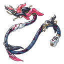

추천 광추
야경 속에서
치확 +18% · 속도 비례 피해
효과 자세히
전투 속도 100 초과 10마다 일반 공격·스킬 피해 +6% · 필살기 치피 +12%, 최대 6스택.
이상이 불타는 지옥
치확 +16% · 스킬마다 공격력 +10%
효과 자세히
스킬로 최대 4스택. 전투 진입 시 파티 SP 최대치 6pt 이상이면 공격력 +40% 추가. SP 최대치 6 이상인 편성에서 공격력 +40% 조건 활성.
별바다 순항
치확 +16% · 처치 시 공격력 +40%
효과 자세히
적 HP 50% 이하 → 추가 치확 +16%. 적 처치 시 공격력 증가 2턴.
그 종착지에서 다시 만나자
치피 +40% · 스킬과 추가 공격 +40%
효과 자세히
전투 스킬과 추가 공격 피해에 적용.
추천 유물
별을 갈망하는 항법사 아집 4 · 뭇별 경기장 2
- 머리
 주옵션HP부옵션치명타 확률 · 치명타 피해 · 공격력% · 속도
주옵션HP부옵션치명타 확률 · 치명타 피해 · 공격력% · 속도 - 손
 주옵션공격력부옵션치명타 확률 · 치명타 피해 · 공격력% · 속도
주옵션공격력부옵션치명타 확률 · 치명타 피해 · 공격력% · 속도 - 몸통
 주옵션치명타 확률 / 치명타 피해부옵션치명타 확률 (주옵션 제외) · 치명타 피해 (주옵션 제외) · 공격력% · 속도
주옵션치명타 확률 / 치명타 피해부옵션치명타 확률 (주옵션 제외) · 치명타 피해 (주옵션 제외) · 공격력% · 속도 - 다리
 주옵션공격력%부옵션치명타 확률 · 치명타 피해 · 속도
주옵션공격력%부옵션치명타 확률 · 치명타 피해 · 속도 - 구체
 주옵션양자 속성 피해 / 공격력%부옵션치명타 확률 · 치명타 피해 · 공격력% (주옵션 제외) · 속도
주옵션양자 속성 피해 / 공격력%부옵션치명타 확률 · 치명타 피해 · 공격력% (주옵션 제외) · 속도 - 매듭
 주옵션공격력%부옵션치명타 확률 · 치명타 피해 · 속도
주옵션공격력%부옵션치명타 확률 · 치명타 피해 · 속도
이 조합을 추천하는 이유
항법사 스킬마다 스킬·필살기 피해 +18%, 최대 3스택. 뭇별 전투 치확 70% → 스킬 강화.
별처럼 빛나는 천재 4 · 창공 전선 그라모스 2
- 머리
 주옵션HP부옵션치명타 확률 · 치명타 피해 · 공격력% · 속도
주옵션HP부옵션치명타 확률 · 치명타 피해 · 공격력% · 속도 - 손
 주옵션공격력부옵션치명타 확률 · 치명타 피해 · 공격력% · 속도
주옵션공격력부옵션치명타 확률 · 치명타 피해 · 공격력% · 속도 - 몸통 주옵션치명타 확률 / 치명타 피해부옵션치명타 확률 (주옵션 제외) · 치명타 피해 (주옵션 제외) · 공격력% · 속도
- 다리
 주옵션공격력%부옵션치명타 확률 · 치명타 피해 · 속도
주옵션공격력%부옵션치명타 확률 · 치명타 피해 · 속도 - 구체
 주옵션양자 속성 피해 / 공격력%부옵션치명타 확률 · 치명타 피해 · 공격력% (주옵션 제외) · 속도
주옵션양자 속성 피해 / 공격력%부옵션치명타 확률 · 치명타 피해 · 공격력% (주옵션 제외) · 속도 - 매듭

주옵션공격력%부옵션치명타 확률 · 치명타 피해 · 속도
이 조합을 추천하는 이유
천재 양자 약점 방어력 무시 20%. 그라모스 속도 135/160 조건에 스킬 가속 포함.
별을 갈망하는 항법사 아집 4 · 뭇별 경기장 2
- 머리
주옵션HP부옵션치명타 확률 · 치명타 피해 · 공격력% · 속도
- 손
주옵션공격력부옵션치명타 확률 · 치명타 피해 · 공격력% · 속도
- 몸통
주옵션치명타 확률 / 치명타 피해부옵션치명타 확률 (주옵션 제외) · 치명타 피해 (주옵션 제외) · 공격력% · 속도
- 다리
주옵션공격력%부옵션치명타 확률 · 치명타 피해 · 속도
- 구체
주옵션양자 속성 피해 / 공격력%부옵션치명타 확률 · 치명타 피해 · 공격력% (주옵션 제외) · 속도
- 매듭
주옵션공격력%부옵션치명타 확률 · 치명타 피해 · 속도
이 조합을 추천하는 이유
항법사 스킬마다 스킬·필살기 피해 +18%, 최대 3스택. 뭇별 전투 치확 70% → 스킬 강화.
별처럼 빛나는 천재 4 · 창공 전선 그라모스 2
- 머리
주옵션HP부옵션치명타 확률 · 치명타 피해 · 공격력% · 속도
- 손
주옵션공격력부옵션치명타 확률 · 치명타 피해 · 공격력% · 속도
- 몸통 주옵션치명타 확률 / 치명타 피해부옵션치명타 확률 (주옵션 제외) · 치명타 피해 (주옵션 제외) · 공격력% · 속도
- 다리
주옵션공격력%부옵션치명타 확률 · 치명타 피해 · 속도
- 구체
주옵션양자 속성 피해 / 공격력%부옵션치명타 확률 · 치명타 피해 · 공격력% (주옵션 제외) · 속도
- 매듭 주옵션공격력%부옵션치명타 확률 · 치명타 피해 · 속도
이 조합을 추천하는 이유
천재 양자 약점 방어력 무시 20%. 그라모스 속도 135/160 조건에 스킬 가속 포함.
별처럼 빛나는 천재 4 · 뭇별 경기장 2
- 머리
주옵션HP부옵션치명타 확률 · 치명타 피해 · 공격력% · 속도
- 손
주옵션공격력부옵션치명타 확률 · 치명타 피해 · 공격력% · 속도
- 몸통 주옵션치명타 확률 / 치명타 피해부옵션치명타 확률 (주옵션 제외) · 치명타 피해 (주옵션 제외) · 공격력% · 속도
- 다리
주옵션공격력%부옵션치명타 확률 · 치명타 피해 · 속도
- 구체
주옵션양자 속성 피해 / 공격력%부옵션치명타 확률 · 치명타 피해 · 공격력% (주옵션 제외) · 속도
- 매듭
주옵션공격력%부옵션치명타 확률 · 치명타 피해 · 속도
이 조합을 추천하는 이유
천재의 양자 약점 방어력 무시와 뭇별의 전투 스킬 피해 효과를 사용합니다.
이 정도면 잘 키웠다
선택한 세팅 기준 · —는 확인된 수치 없음
전용 광추와 선데이의 치명타 지원을 활용합니다.
| 스탯 | 추천 스탯 | 준종결 | 종결 |
|---|---|---|---|
| 공격력 (양자 피해 구체) | 3200 | — | — |
| 공격력 (공격력 구체) | 3600[1]공격력 구체 착용 시. | — | — |
| 속도 | 마을 131.3+[2]시트의 야경 속에서 최대 중첩 조건. | — | — |
| 치명타 확률 | 80%[3]선데이의 치명타 확률 +20%를 받을 때. | — | — |
| 치명타 피해 | 160% | — | — |
세팅 기준·출처
공개 가이드에서 이 세팅의 준종결 또는 종결 수치를 확인하지 못했습니다.
전용 광추를 쓰고 선데이 이외의 파티에서 치명타를 확보합니다.
| 스탯 | 추천 스탯 | 준종결 | 종결 |
|---|---|---|---|
| 공격력 (양자 피해 구체) | 3200 | — | — |
| 공격력 (공격력 구체) | 3600[1]공격력 구체 착용 시. | — | — |
| 속도 | 마을 131.3+[2]시트의 야경 속에서 최대 중첩 조건. | — | — |
| 치명타 확률 | 100% | — | — |
| 치명타 피해 | 140% | — | — |
세팅 기준·출처
공개 가이드에서 이 세팅의 준종결 또는 종결 수치를 확인하지 못했습니다.
스파클 편성에서 「이상이 불타는 지옥」의 조건부 효과를 사용합니다.
| 스탯 | 추천 스탯 | 준종결 | 종결 |
|---|---|---|---|
| 공격력 (양자 피해 구체) | 3200 | — | — |
| 공격력 (공격력 구체) | 3600[1]공격력 구체 착용 시. | — | — |
| 치명타 확률 | 100% | — | — |
| 치명타 피해 | 140% | — | — |
세팅 기준·출처
속도 131.3은 야경 최대 중첩의 조건입니다. 공개 가이드에서 이 세팅의 준종결 또는 종결 수치를 확인하지 못했습니다.
스탯 조건과 각주
- 공격력 (공격력 구체) · 추천 스탯 공격력 구체 착용 시. ↑
별바다 순항, 깊게 든 단잠, 논검의 시트 공격력 기준을 사용합니다.
| 스탯 | 추천 스탯 | 준종결 | 종결 |
|---|---|---|---|
| 공격력 (양자 피해 구체) | 2700 | — | — |
| 공격력 (공격력 구체) | 3100[1]공격력 구체 착용 시. | — | — |
| 치명타 확률 | 100% | — | — |
| 치명타 피해 | 140% | — | — |
세팅 기준·출처
순항의 체력이 낮은 적 대상 치명타 확률 보너스와 처치 시 공격력 보너스는 조건부입니다. 공개 가이드에서 이 세팅의 준종결 또는 종결 수치를 확인하지 못했습니다.
스탯 조건과 각주
- 공격력 (공격력 구체) · 추천 스탯 공격력 구체 착용 시. ↑
원본 종결 표의 명함·전용 광추 세팅입니다.
| 스탯 | 추천 스탯 | 준종결 | 종결 |
|---|---|---|---|
| 공격력 | — | — | 4000 |
| 속도 | — | — | 122 |
| 치명타 확률 | — | — | 80% |
| 치명타 피해 | — | — | 240% |
세팅 기준·출처
시트가 별도로 제시한 종결 수치입니다. 속도 122는 야경 최대 중첩 조건인 마을 131.3과 구분합니다. 공개 가이드에서 이 세팅의 준종결 수치를 확인하지 못했습니다.
성혼과 추천 돌파
1돌 치확·방어력 무시 · 2돌 전투 스킬 가속 2중첩.
1적 HP ≤ 80% → 치확 +15%·방어력 무시 20%추천
몰살
2전투 스킬 가속 상한 2스택추천
나비춤
3전투 스킬·특성 +2
스킬·특성 레벨 상한 각각 15.
4제레가 처치 → 에너지 +15pt
스쳐가는 그림자
5필살기 +2 · 일반 공격 +1
필살기·일반 공격 레벨 상한 각각 15·10.
6필살기 대상에 혼란의 나비 3턴
피격 시 제레 필살기 피해 30% 확정 피해. 누가 처치해도 제레 특성 발동.
추천 파티


기본 운영과 행적
처치 대상을 먼저 정하기
약한 적을 처치해 보너스 턴과 증폭 확보 → 증폭 중 주 대상에게 필살기.
- 동료 공격 후 HP 50% 이하 적에게 SP·에너지 변화 없는 자동 스킬 1회. 제레 턴 시작 시 횟수 초기화.
행적 육성 순서
전투 스킬 → 특성·필살기 → 일반 공격
아하 속도 계산기 →기준과 출처 · 2026-11-27
4.7 데이터 · 4.2 정련된 새 빛 강화 · Prydwen 장비 참고